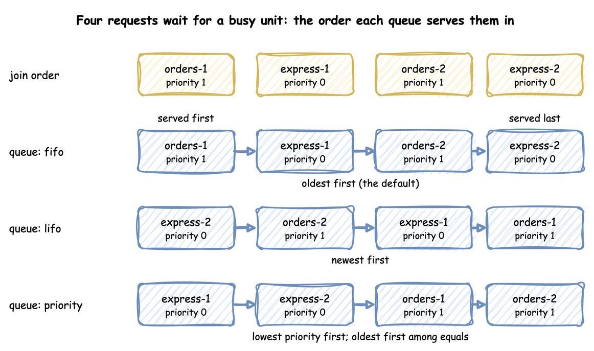
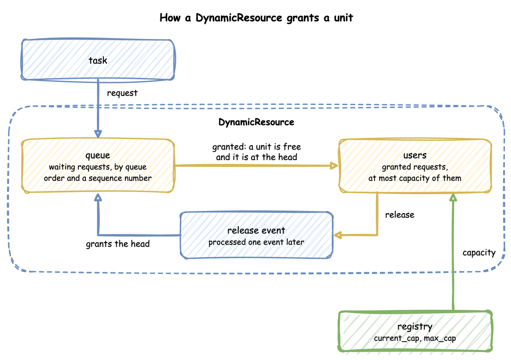

Resources: DynamicResource
A resource is what an entity must hold while it works, and may have to wait for. This page shows how to declare one, how its queue is ordered, how it hands out units, and what happens when its capacity changes during a run.
What It Is
A resource is a number of identical units: packers, packing benches, checkout lanes, loading bays. A task asks for one unit, waits in the resource's queue while every unit is busy, holds the unit while it works, and gives it back. How many units there are is the resource's capacity, and it can change while the run goes on, as when packers go on a break.
Pages in This Section
- Priority and Preemption: rank waiting requests by task priority, let a more urgent request take a unit from a less urgent task, and fail a resource at random. A lower
priorityvalue is more urgent. - Several Resources: hold several resources in one task, and the order in which tasks acquire them.
- Custom Resource Types: change how a resource grants units with your own class.
How to Use It
Declare a Resource
A resource has a current_cap, the number of units now, and a max_cap, the most a live change can set. Both are whole numbers, and both may be left out: current_cap is then 1 and max_cap is the current_cap, so packers: {} is a resource of one unit, as simpy.Resource(env) is. current_cap: .inf (float("inf") in Python) is a resource with no limit: every request is granted at once, capacity is published as null and utilization as 0. queue_limit sets the most requests that may wait, as Queue Limit describes. run() builds a DynamicResource for each one the context declares. In the low-level API you build it yourself, after registering the parameters. A resource of one unit needs no registration at all:
| docs/snippets/pages/resources.py:resource | |
|---|---|
packers.request() is an event that happens when a unit is granted, and leaving the with block gives the unit back. A request whose with block is left before it is granted, for example after a timeout, is cancelled and never takes a unit.
Queue Order
queue sets the order in which a resource serves the requests waiting for it:
fifo, the default: the oldest first;lifo: the newest first;priority: the lowest priority number first, and the oldest first among equal priorities.
Four requests that join while the only unit is busy are served in these orders:
The last line is a capacity drop, which Under Live Changes describes below. The same four requests, drawn:

Queue Limit
A resource with a queue_limit of 5 (queue_limit: 5 in a blueprint, add_resource(..., queue_limit=5) in the builder, and the same argument of DynamicResource) refuses a request made while five requests wait already, as SimPy's SortedQueue(maxlen=5) does. The refusal comes before a grant or a preemption, so a limit of 0 refuses every request. A task that is refused balks: it gives back the units it holds, publishes balked with the name of the resource, counts as balked and ends its flow. When the limited resource is the first one the task asks for, and the task has no wait before it, the task balks before it publishes queued. A request branch of a wait on a full resource, in an any or in an all, fails the wait at once, with SimPy's message "Cannot append event. Queue is full.". When a request branch has won its wait and the unit is then taken by preemption, the task asks for a unit again. It balks if the line is full then, and it reneges if its patience runs out while it waits, as for a resource: unit. In the low-level API request() raises QueueFull (in desflow.resources.resource), a RuntimeError with that message, which your process catches as it would catch a balk condition. A reneged or cancelled request leaves the line, which makes room for the next. Refuse to Join shows the other way an order balks, by a condition of its own.
In a blueprint, queue_limit sits beside the capacity. packers has the default of one unit, and refuses a fourth waiting request:
| docs/snippets/yaml/resources_read.yaml:declare | |
|---|---|
Cancel and Release
A task leaves a queue when its patience runs out, when it is interrupted, or under on_interrupt: abandon. It then cancels its request, so the request is never granted later. Once a unit is granted, the task gives it back when it finishes, when it is interrupted, and when it is preempted (the preempting task has it then). In the low-level API these are SimPy's calls:
request.cancel() takes a waiting request out of the queue, and does nothing to a granted one. packers.release(request) gives a granted unit back once. Releasing it again, or releasing a request that was never granted, gives nothing back. A release is an event, a DynamicRelease, as SimPy's Release is. Its request is the request it releases (with no request, the oldest unit held). It is triggered as soon as it is made, and the next waiting request is granted one event later, when the release is processed. A with block does both on its way out, as in SimPy.
Read the Queue and Users
A resource counts the units held and the requests waiting. In a condition, users.<resource> is how many units are held, and queue.<resource> is how many requests wait. A task can therefore turn an order away when the line is long, or wait until nobody holds a unit. The names are checked when the blueprint loads, as level.<name> is:
| docs/snippets/yaml/resources_read.yaml:conditions | |
|---|---|
context.get_resource("packers") returns the running DynamicResource. Its count is the number of units held. users lists the requests that hold them, in the order of their grants. queue lists the waiting requests in the order they will be served, so queue[0] is served next. A request has usage_since, the time it was granted its unit, and proc, the process that made it. A task's process has the task's name.
count is the same as in_use, SimPy's name for it. queue is a list of the waiting requests, in service order.
Registry Paths and Readings
Each resource has two registry paths, <sim_id>.resources.<name>.current_cap and .max_cap, which a scenario, an ingress message or a process can change. Live Parameters explains how. A resource that breaks down adds <sim_id>.breakdown.<name>.time_to_failure and .repair, its two distributions. With statistics at the minimal level or above, each resource publishes four readings, such as Shop.stats.resources.packers.utilization: capacity, in_use, queue_length and utilization. utilization is the busy units as a percentage of the capacity. A resource with no limit publishes a capacity of null and a utilization of 0. A resource that breaks down adds down, which is 1 while it is down. Statistics lists what the other levels add, among them downtime and failures.
How It Works
A DynamicResource grants units the way SimPy's Resource does, with two lists. queue holds the waiting requests, ranked by the queue order and then by a sequence number, so requests that rank the same are served in the order they arrived. users holds the granted requests. A request is granted when it is made if a unit is free and nothing waits ahead of it. Otherwise it waits, and each release grants the head of the queue when its release event is processed, one event later, as SimPy's Release does:

Because each step is the one SimPy takes, two events at the same simulation time are granted in SimPy's order: a waiting order whose patience runs out at the instant a unit is released reneges or is served exactly as it would in plain SimPy. in_use counts users: it goes up when a request is granted and down when a unit is released.
A waiting request leaves the queue at once when it is cancelled. A with block cancels it when the block is left before the grant, and request.cancel() does the same by hand. packers.release(request) gives a granted unit back. Cancelling a granted request releases nothing, and releasing a request twice, or one never granted, gives nothing back, as in SimPy. Every release still tries the head of the queue when its release event is processed, as SimPy's does: when a request that reneged was the head, the request behind it may then be granted or preempt a user.
SimPy and desflow. SimPy's Resource serves requests in the order they arrive, and PriorityResource by priority. Both take their capacity when they are created and keep it: capacity has no setter, so assigning a new one raises AttributeError (SimPy 4.1). desflow builds its own resource, so that the capacity can follow the registry and the queue order can be chosen. The request() call and the with block are SimPy's, so code written for SimPy works unchanged. SimPy and desflow compares the two.
Under Live Changes
A change to current_cap takes effect at once, without stopping any work:
- Growing grants waiting requests at once, up to the new capacity.
- Shrinking stops nothing. The units still busy above the new capacity are owed: each one given back brings the busy count down, and no waiting task starts until the busy count is within the new capacity.
- Growing again before the owed units are given back cancels them first, so only the rest of the rise grants waiting requests.
- A
current_capoutside 0 tomax_capis clamped to that range, with a warning. - Lowering
max_caplowers the capacity with it. Acurrent_capabove the newmax_capis stored asmax_cap, with a warning. - During a repair the capacity is 0 and
current_capkeeps the planned value. A change to it sets the capacity the resource returns to and does not end the repair.
The example below takes three of five packers off the floor while four orders are being packed: the capacity is 2 at once, and in_use stays 4 until two orders finish. The animation steps through it:

Until the owed units finish, in_use is above capacity, and the utilization reading is above 100%.
Stability and Limits
- Utilisation decides waits. A resource whose load is at or above its capacity has a queue that grows for as long as the run lasts. Queues and Capacity shows how to work it out, and Queueing Basics explains utilisation.
- Priority needs
queue: priority. A task priority on a resource of another order is a load error, while a low-level request's priority is ignored underfifoandlifo. - Priority can starve. Under
priority, a request with a high number is served only when no lower number is waiting. If the low numbers alone keep the resource busy, it is never served. - One order of acquisition. A model whose tasks acquire two resources in opposite orders is refused. Several Resources explains why.
- A shrink never stops work. Lowering
current_caplets busy units finish. Work in progress stops only for an interrupt, a preemption or a breakdown: Interruptions, and Model Breakdowns for a machine that fails. - A preempted task queues again. With
resumeorrestartit joins the back of its priority among the waiting requests, as a new SimPy request does. The time it waited before counts in its wait.
Amounts and items that tasks take and add, rather than hold, are Stores and Containers.